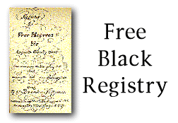
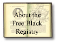

|  | |
|
Register of Free Blacks, Augusta County |
|
|
This is a very large file, so we have divided it into two sections: Registration dates between 1803 and 1845 (123K) |
 |
| Be aware that many people registered more than once during their lifetime. If you are looking for a specific individual, be sure to check both files. | |